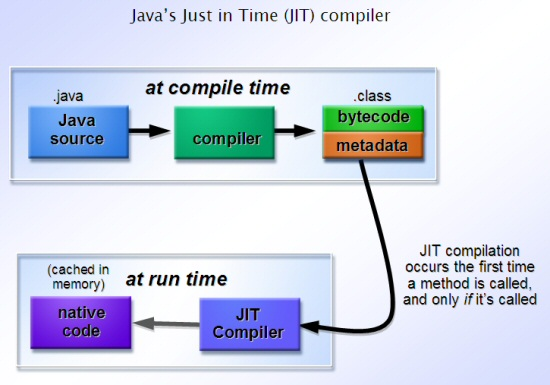
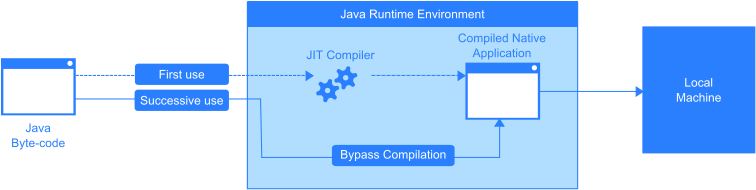
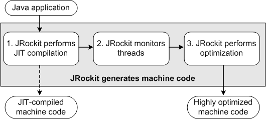
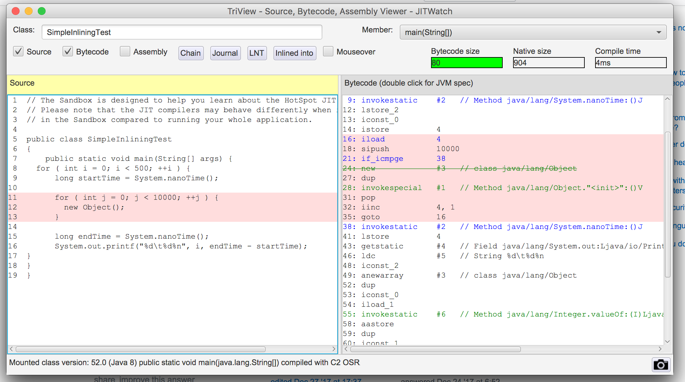

Do it only if needed
Store results of compilation for future use
Premature optimization is the root of all evil.
Heavily used methods and loops
level 0 - interpreter
level 1 - C1 with full optimization (no profiling)
level 2 - C1 with invocation and backedge counters
level 3 - C1 with full profiling
level 4 - C2
private static final int LOOP_COUNT = 5000;
public static void main(String[] args) {
for (int i = 0; i < 1000; ++i) {
long startTime = System.nanoTime();
for (int j = 0; j < LOOP_COUNT; ++j) {
new Object();
}
long endTime = System.nanoTime();
System.out.printf("%d\t%d%n", i, endTime - startTime);
}
}
javac test/HotLoops.java && java test.HotLoops
0 224194
1 197060
19 66723
20 78074
59 1737
60 1747
996 2699
997 3261
998 2465
999 3111
JIT gets rid of the inner loop
Introduce branch condition which is false most of the times
private static final int LOOP_COUNT = 10000;
public static void main(String[] args) {
for (int i = 0; i < 1000; ++i) {
long startTime = System.nanoTime();
for (int j = 0; j < LOOP_COUNT; ++j) {
Object x = new Object();
if (i == 900) {
x = null;
}
}
long endTime = System.nanoTime();
System.out.printf("%d\t%d%n", i, endTime - startTime);
}
}
69 128783
70 133282
71 139054
72 162974
73 154268
74 52
75 50
76 49
77 47
897 39
898 40
899 40
900 571824
901 322669
902 233286
903 162727
How to handle nulls
What if value is null?
static final void hotMethod(final Object value) {
value.hashCode();
}
JIT assumes absence of nulls
public static void main(String[] args) throws InterruptedException {
for (int i = 0; i < 20_000; ++i) {
hotMethod("hello");
}
Thread.sleep(5_000);
int count = 0;
for (int i = 0; i < 1000; ++i) {
System.out.printf("tempting fate %d%n", i);
try {
hotMethod(null);
} catch (NullPointerException e) {
// ignore
}
}
}
static final void hotMethod(final Object value) {
value.hashCode();
}
Output
tempting fate 0
tempting fate 1
tempting fate 2
tempting fate 3
5178 111 4 test.NullJIT::hotMethod (6 bytes) made not entrant
tempting fate 4
5178 193 3 java.util.Arrays::copyOfRange (63 bytes)
tempting fate 5
tempting fate 6
We usually see this in adserv logs, exceptions without stack traces
java.lang.NullPointerException
java.lang.NullPointerException
java.lang.NullPointerException
java.lang.NullPointerException
java.lang.NullPointerException
java.lang.NullPointerException
This is JIT optmizing for throwing exceptions.
Garbage collection uses optimizations done by JIT to stop the world